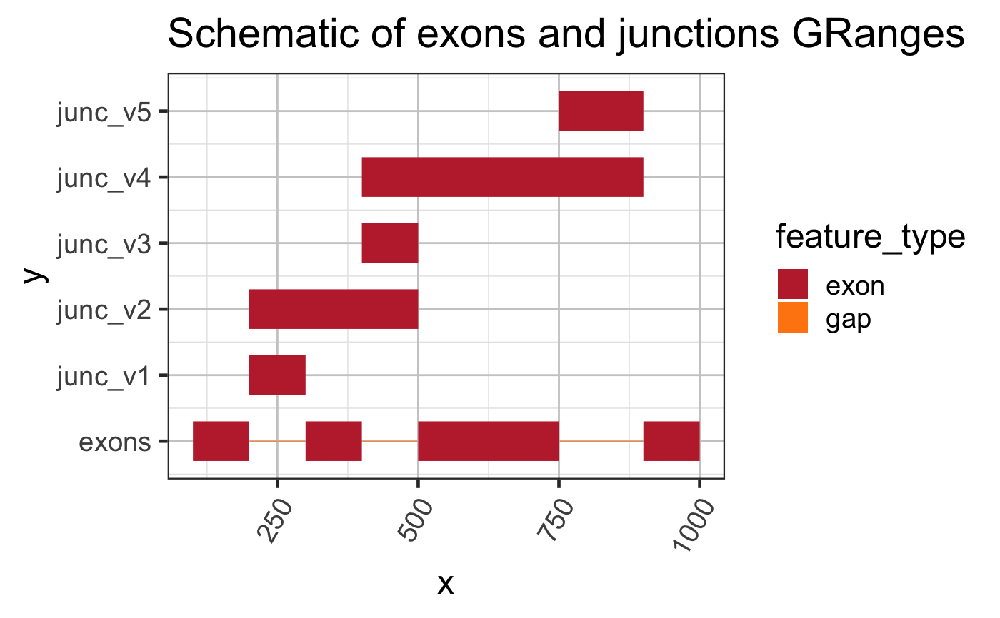
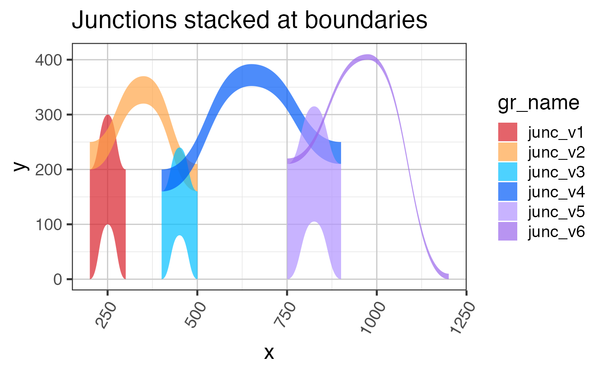
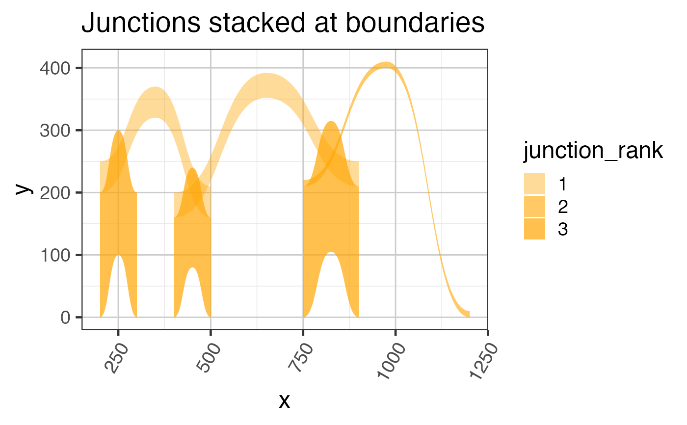
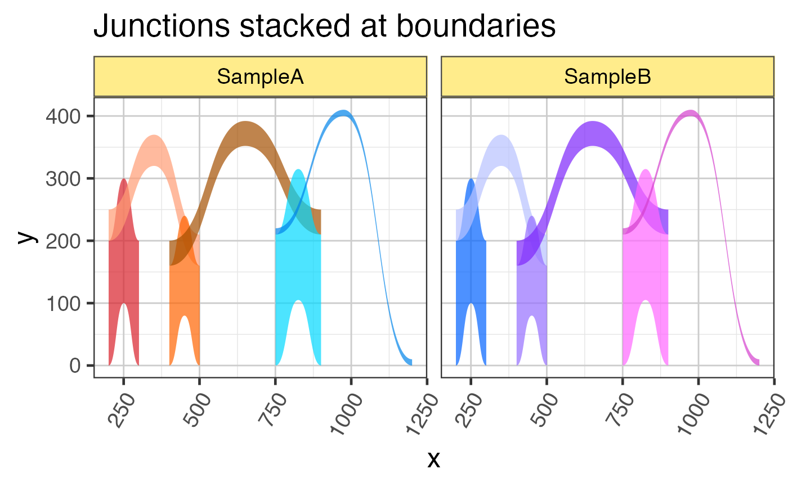

Stack the y-axis position of junctions
stackJunctions( gr, scoreColname = "score", sampleColname = "sample_id", scoreFactor = 1, matchFrom = NULL, matchTo = NULL, strandedScore = TRUE, baseline = NULL, verbose = FALSE, ... )
Arguments
| gr | GRanges object representing splice junctions. |
|---|---|
| scoreColname | character string matching one of |
| sampleColname | character string with the column or columns
that contain biological sample identifier, used to ensure junctions
are only stacked within a sample, and not across samples. When
|
| scoreFactor | numeric value multiplied by the value in |
| matchFrom, matchTo | optional colnames to use when grouping
junctions at the start and end positions. By default |
| strandedScore | logical indicating whether to enforce negative
scores for junctions on the |
| baseline | numeric vector of length 0, 1 or |
| verbose | logical indicating whether to print verbose output. |
| ... | additional arguments are ignored. |
Value
GRanges with colnames c("yStart", "yEnd") added
to values(gr), indicating the baseline y-axis position
for the start and end of the junction arc. The score
values(gr)[[scoreColname]] will reflect the adjustments
by scoreFactor, and if strandedScore=TRUE then all
strand "-" scores will be negative, all other scores
will be positive.
Details
This function is intended to help visualize splice junctions
specifically when plotted using geom_diagonal_wide_arc(),
where the height of the junction arc is defined by the score.
When two junctions have the same start position, their y-positions
are stacked, such that the shorter junction width is placed before
longer junction widths. The intention is to reduce visible overlaps.
The input data is expected to have annotations similar to
those provided by closestExonToJunctions(), specifically
the columns "nameFrom" and "nameTo", see examples below.
When the input data does not contain columns "nameFrom" and
and "nameTo", the junctions are by default stacked by
coordinates.
See also
Other jam plot functions:
bgaPlotly3d(),
factor2label(),
gene2gg(),
grl2df(),
jitter_norm(),
plotSashimi(),
prepareSashimi()
Other jam GRanges functions:
addGRLgaps(),
addGRgaps(),
annotateGRLfromGRL(),
annotateGRfromGR(),
assignGRLexonNames(),
closestExonToJunctions(),
combineGRcoverage(),
exoncov2polygon(),
findOverlapsGRL(),
getFirstStrandedFromGRL(),
getGRLgaps(),
getGRcoverageFromBw(),
getGRgaps(),
grl2df(),
jam_isDisjoint(),
make_ref2compressed(),
sortGRL(),
spliceGR2junctionDF()
Examples
library(GenomicRanges); library(ggplot2); library(ggforce); library(colorjam); library(jamba); grExons <- GRanges(seqnames=rep("chr1", 4), ranges=IRanges::IRanges( start=c(100, 300, 500, 900), end=c(200, 400, 750, 1000)), strand=rep("+", 4)); names(grExons) <- jamba::makeNames(rep("exon", length(grExons)), suffix=""); grJunc <- GRanges(seqnames=rep("chr1", 6), ranges=IRanges::IRanges(start=c(200, 200, 400, 400, 750, 750), end=c(300, 500, 500, 900, 900, 1200)), strand=rep("+", 6), score=c(200, 50, 160, 40, 210, 10)); names(grJunc) <- jamba::makeNames(rep("junc", length(grJunc))); # quick plot showing exons and junctions using rectangles grl <- c( GRangesList(exons=grExons), split(grJunc, names(grJunc)) ); ggplot(grl2df(grl), aes(x=x, y=y, group=id, fill=feature_type)) + ggforce::geom_shape() + scale_y_continuous(breaks=seq_along(grl)-1, labels=names(grl)) + colorjam::theme_jam() + colorjam::scale_fill_jam() + ggtitle("Schematic of exons and junctions GRanges");#> Warning: failed to set names on the unlisted CompressedRleList object# add annotation for closest known exon grJunc <- closestExonToJunctions(grJunc, grExons, spliceBuffer=5)$spliceGRgene; # The un-stacked junctions grlJunc2df1 <- grl2df(grJunc, shape="junction", doStackJunctions=FALSE); ggplot(grlJunc2df1, aes(x=x, y=y, group=gr_name, fill=gr_name)) + geom_diagonal_wide_arc(alpha=0.7) + colorjam::scale_fill_jam() + colorjam::theme_jam() + ggtitle("Junctions not stacked at boundaries")# The stacked junctions grJunc2 <- stackJunctions(grJunc); grlJunc2df2 <- grl2df(grJunc2, scoreArcMinimum=20, shape="junction"); ggplot(grlJunc2df2, aes(x=x, y=y, group=gr_name, fill=gr_name)) + geom_diagonal_wide_arc(alpha=0.7) + colorjam::scale_fill_jam() + colorjam::theme_jam() + ggtitle("Junctions stacked at boundaries");## Another view showing the junction_rank ## based upon max reads entering and exiting each exon edge ggplot(grlJunc2df2, aes(x=x, y=y, group=gr_name)) + geom_diagonal_wide_arc(aes(alpha=junction_rank), fill="orange") + scale_alpha_manual(values=c(`1`=0.4, `2`=0.6, `3`=0.7)) + colorjam::scale_fill_jam() + colorjam::theme_jam() + ggtitle("Junctions stacked at boundaries")## Last example showing how two samples are kept separate grJunc_samples <- c(grJunc, grJunc); values(grJunc_samples)[,"sample_id"] <- rep(c("SampleA","SampleB"), each=length(grJunc)); names(grJunc_samples) <- jamba::makeNames(values(grJunc_samples)[,"sample_id"]); grlJunc2df_samples <- grl2df(grJunc_samples, scoreArcMinimum=20, shape="junction"); ggplot(grlJunc2df_samples, aes(x=x, y=y, group=gr_name, fill=gr_name)) + geom_diagonal_wide_arc(alpha=0.7, show.legend=FALSE) + colorjam::scale_fill_jam() + colorjam::theme_jam() + ggtitle("Junctions stacked at boundaries") + facet_wrap(~sample_id)